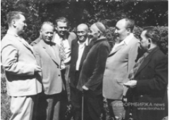

Шолохов и казахстанские писатели

Шолохов и казахстанские писатели
Личные, до глубины дружественные, а также творческие связи с М. Шолоховым имели выдающиеся казахстанские писатели Мухтар Ауэзов, Сабит Муканов, Габит Мусрепов, Жубан Молдагалиев, Николай Корсунов, Иван Шухов, Олжас Сулейменов, Хамза Есенжанов.
Михаил Александрович так говорил о своих друзьях: «Считаю, что современная казахская литература – многожанровая, глубокая по мысли. …Писателей, которые своим творчеством заявляют миру о казахской литературе, много. Мои друзья Мухтар Ауэзов, Сабит Муканов, Габит Мусрепов возглавляют этот караван. Это – мастера слова… «Хороший скакун – один из сотни отборных коней, тулпар – один из тысячи таких же коней», – так говорит ваш народ. …Если так, то они – тулпары казахской литературы».

С.Муканов
Михаила Шолохова и Сабита Муканова связывали особо дружеские и тёплые отношения. «Единокровный брат мой», – так называл Сабит Муканов Шолохова. «Я знаю Шолохова более тридцати лет, – говорил Сабит Муканов. – Храню в своей памяти его очень молодого, с легким степным загаром, с веселыми глазами. Я уже знал Шолохова по его романам, спросил, откуда он знает меня. Он ответил: «А помнишь ты, 1 мая 1933 год а в «Известиях» было опубликовано твое стихотворение «Здравствуй, май». Вот с той поры мне и известно, что есть на белом свете поэт Сабит Муканов». Много воды утекло с той поры, много раз я встречал Шолохова на писательских съездах, пленумах, в издательствах, в гостинице «Москва», сиживали в тесном кругу. Он встречал всегда нас очень радушно со словами «Братья мои – казахи!».
Со времен выхода первой книги «Тихого Дона» завязывается дружба Шолохова с Габитом Мусреповым. В годы Великой Отечественной войны Мусрепов перевел ряд публицистических статей и отрывков из романа М. Шолохова «Они сражались за Родину». «С Мишей мы давно дружим. Еще со времен выхода первой книги «Тихого Дона», а затем «Поднятой целины». Шолохов сумел миллионы своих читателей заставить глубоко задуматься над ценностями жизни, нам очень многому еще у него учиться приходится! Писателей, подобно Шолохову, умеющих заронить в человеческом сердце глубокую мысль, на свете совсем немного. Вот почему справедливо говорить об огромном влиянии его творчества на общемировую культуру, на казахскую литературу, в частности, на художественную идею нашей эпохи», – так отзывался о Шолохове Габит Мусрепов.
Г.Мусрепов
Дружба Николая Федоровича Корсунова с Шолоховым – дар судьбы и земли уральской.
Ещё один казахстанский писатель, с кем был дружен Шолохов, Иван Петрович Шухов. «Тогда мы только начали входить в литературу, но нас связывала общность жизненного материала и опыта. Шолохов – донской казак, я крепко связал себя с темой сибирского казачества в грозовые и прекрасные годы революции. Считаю, что мне повезло – тесное, непосредственное общение с Шолоховым в самом начале моей писательской биографии во многом помогло мне в литературном само-определении».
И.П.Шухов
Ж.Молдагалиев
В 1980 году в апреле по творческим делам первый секретарь Союза писателей Казахстана Жубан Молдагалиев приехал в Вешенскую. Позднее он написал: «Шолохов – не только литератор в чистом виде. Он – человек социального, политического мышления. Беспрерывный 60-летний путь писателя – нелегкий путь, путь переживаний, радостей и горестей, творческих поисков и раздумий. Всю энергию, порывы души и жизненный путь отдавал он своим современникам, своей беспокойной эпохе.
В 1938 году, в дни празднования 70-летия песенного творчества Джамбула, Шолохов из станицы Вёшенской поздравил акына: «Покоренный Вашим могучим талантом, от всего сердца благодарю за радость, доставленную Вашими песнями. Шлю Вам сыновний привет и горячее пожелание здоровья, бодрости и сил». Взволнованный, великий акын экспромтом воскликнул: – Тихого Дона родные сыны, Вы и Джамбулу родные сыны!
Д.Джабаев
Михаил Александрович, друживший с огромным количеством людей, тем не менее был избирателен в их выборе. И то, что наши казахстанские писатели входили в их число, говорит о многом.